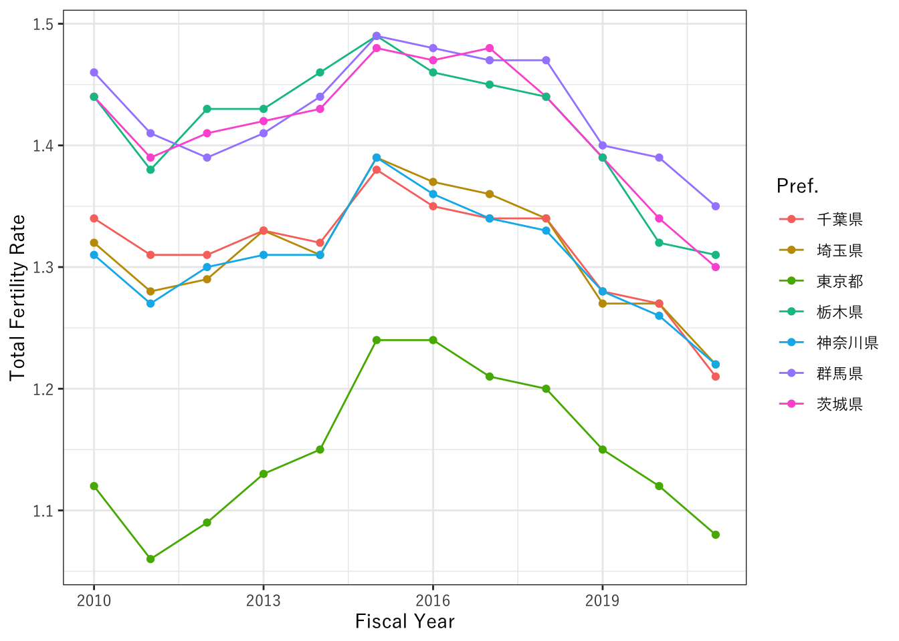

Chapter 9 推測統計のおさらい
9.1 母集団と標本
7.1.2で説明したように、各自が興味を持つ研究対象について、全体を知ることは難しくても一部を知ることで全体を推し量ることができる。この研究対象の全体を母集団と呼ぶ。例えば、「日本の漁業者の収入は一般の収入より高いか？」という問題に取り組むとしても、日本の漁業者全員分の収入を集めることは難しいし、一般の人の収入ならなおさらである。そこで、一部をサンプリングしてサンプル（標本）による調査を行う。このサンプルの大きさをサンプルサイズ(標本サイズ)と呼ぶ。
言葉の誤用に注意
よくある統計学関係の言葉で、誤用されることが多いものを挙げておく。 まず、母集団とよく間違えられるのが母数である。「母数が多いから…」などとしてよく使われるが、母数とは実はパラメータのことを表す。パラメータとは母集団の特徴を表す係数のことを指す。例えば、内閣支持率が40%である、などという報道を聞くことがある。これはもし１億人有権者がいるとして、その全員に聞いた結果4000万人が支持しているとするならば、この「本当の支持率」は母数の一つである母比率である。しかし、実際には全員に聞くことは難しい。報道なのでは1000人程度に電話で聞いた結果を、内閣支持率として発表するが、これは母比率を推定しているのである。母数は一般的に我々にとっては未知であり、だからこそサンプリングしたデータで推定するのである。
また、サンプルの大きさという意味でよく誤用されるのがサンプル数である。サンプル数とは、標本の数がいくつかあるか（標本のグループがいくつあるか）を表すため、サンプルの大きさという意味で使うのは間違いである。 ## サンプリング
母集団からサンプルを選ぶことをサンプリング（標本抽出）と呼ぶ。このサンプリングが適切でないと、母集団の特徴を適切に推定することはできない。例えば、日本人の平均身長を調査しようと思って、小学校ばかり回って計測していっても日本人全体を推定できると言えないことはわかるだろう。 サンプルを偏りなく選ぶ代表的な方法は単純無作為抽出もしくはシンプルランダムサンプリング(Simple random sampling)と呼ばれる。これは、母集団のうちどの個体も選ばれる確率が等しくなるように選ぶという意味である。その他には系統抽出法, 多段抽出法, 層化抽出法などがあるが、説明は省略する。興味がある学生はたとえば東京大学教養学部統計学教室編「人文・社会科学の統計学」（東京大学出版会）などを参照してほしい。
9.2 推定量
母数の推定に利用されるもの推定量という。例えば、日本人の平均身長が\(\mu\)cmであるとする（\(\mu\)はミューと読むギリシャ文字である）。この「本当の」平均身長は日本人全員の身長を測って平均を取ったものであり、母数の一つである母平均である。しかし、この母平均を実際に計測・計算するのは難しい。そこで、サンプリングを行って1000人を日本人全員の中から抜き出して、サンプルとして計測し、平均を計算する。このとき、計算した平均\(\bar{x}\)cmは標本平均と呼ばれる。例えば\(\bar{x}=170\)とすると、日本人の本当の平均身長は170cmかもしれないし、実は169cmかもしれない。でも185cmである可能性は低そうである。ドンピシャで当てられるかはわからないが、おそらく可能性が高い数値として推定量として用いられるのである。ここでは、標本平均という統計量は、母平均のよい推定量であるという。
9.2.1 不偏性
上では標本平均は母平均のよい推定量と書いたが、よい推定量とはなんだろうか？推定量としてよいかどうかにはいくつかの基準がある。
まずひとつ目は不偏性 (unbiasedness)である。これは、もし仮に何度もサンプリングを行って標本平均をたくさんとったとき（例えば1000回サンプリングを繰り返して、1000個の標本平均が計算できたとき）、その標本平均の平均は、母平均と等しいという性質である。一回のサンプリングによる標本の標本平均は、実際には母平均とはズレがある可能性は否定できない。しかし、その推定プロセスでは、平均的に正しい（母平均と等しい）値が得られるという性質を持つ推定量は不偏性を持つといい、不偏推定量と呼ばれる。
これをRにおけるシミュレーションで確認してみよう。
set.seed(20240509) # ランダムなプロセスを再現するためにseedを設定する。
# 母集団を決める（シミュレーションなので現実とは異なる）
mu = 170
sigma = 10
# サンプルサイズを決める。今回は100人だとする。
sample_size = 100
# rnorm(n,mean,sd)は、meanとsdという母数を持つ正規分布という確率分布を持つ母集団から、n個（今回はn人）をランダムにサンプリングするという関数である。
sample1 <- rnorm(n=sample_size, mean = mu, sd = sigma)
# 平均を計算する
sample1_mean <- mean(sample1)
sample1_mean## [1] 171.1845まず、一度だけのサンプリングと標本平均の計算を行った。 この結果、標本平均は171.18cmなので、母平均の170cmにまぁ近い。
では、このコードを編集して、for関数を用いたループで1000回サンプリングしてみよう。for関数についてはセクション4.2.2を参照。
set.seed(20240509) # ランダムなプロセスを再現するためにseedを設定する。
# 母集団を決める（シミュレーションなので現実とは異なる）
mu = 170
sigma = 10
# サンプルサイズを決める。今回は1000人だとする。
sample_size = 100
# 標本平均を格納するベクトルをつくっておく
sample_mean <- vector()
# 繰り返しloop
for(i in 1:1000){ # iという変数を1から1000まで繰り返す
# サンプリングを行って、sample1というオブジェクトに格納する
sample1 <- rnorm(n=sample_size, mean = mu, sd = sigma)
# 平均を計算して、それをsample_meanのi番目の要素に格納する
sample_mean[i] <- mean(sample1)
}
# 繰り返しが終わったら、sample_meanの平均を獲る
mean(sample_mean)## [1] 169.9808標本平均の平均を見てみると、限りなく170cmに近い数値が出ている。
しかし、一回一回の標本平均がピッタリ170cmであるわけではない。1000回とった標本平均がどのような散らばりを持っているのか、ヒストグラムを描いてみよう。
# ヒストグラムを描画してみる
# ggplot2はデータフレームかtibbleしか受け付けないので、tibbleに変換する。sample_meanという変数にする
data_sample_mean = tibble(sample_mean = sample_mean)
# ggplotのgeom_histogramで描画する。見やすいように枠線を青に、中身をグレーに変更している。
ggplot(data = data_sample_mean) +
geom_histogram(aes(x = sample_mean), col="blue",fill="gray")
標本平均一つ一つであれば、小さいもので167cmぐらい、大きいものだと173cmぐらいまでズレがあることがわかる。それぞれ170cmピッタリとは限らないが、平均的には170cmを推定できていることがわかる。
このことから、標本平均が母平均を推定する推定量として、不偏性を持っているということがわかる。